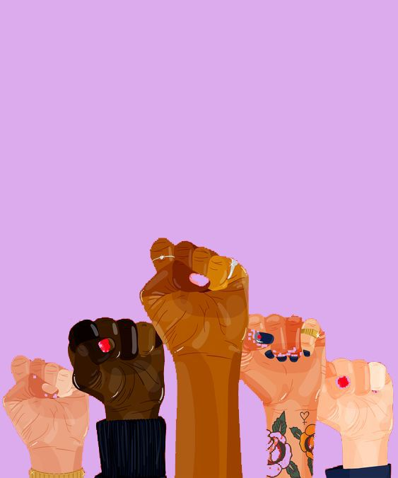

Inicios
Para mostrar apoyo a la huelga que las trabajadoras textiles llevaron a cabo en Nueva York en 1908 –una huelga que, junto con la de 1857, pasaría a la historia–, en 1909 una organización de Mujeres Socialistas celebró en EE.UU. el primer Día Internacional de la Mujer. Aunque solo tuvo seguimiento en Nueva York y Chicago, se calcula que unas 15.000 mujeres participaron en una marcha que recorrió la ciudad de Nueva York.
En 1910, tuvo lugar el segundo encuentro Internacional Socialista de Mujeres, en Copenhague, Dinamarca. En esta ocasión, se propuso fijar un día simbólico –en torno al 8 de marzo– que sirviera para reivindicar los derechos de todas las mujeres, principalmente el derecho al voto. El siguiente año, se celebró por primera vez el Día Internacional de la Mujer el 19 de marzo en algunos países europeos como Alemania, Austria, Dinamarca y Suiza.
Los grandes conflictos de una centena de años tan convulsa como el siglo XX ayudaron a afianzar el papel de la mujer, y a lo largo de las siguientes décadas muchas organizaciones de mujeres de otros países se fueron uniendo a las reivindicaciones que se llevaban a cabo durante el mes de marzo. Hasta que en 1975 la ONU reconoció el día de manera oficial. Es cierto que no resulta sencillo fijar un solo acontecimiento como el motivo por el que se escogió el 8 de marzo, por ello se ha de entender como una lucha en conjunto, un esfuerzo prolongado en el tiempo. Así, se entiende cómo cada generación ha ido heredando el deber deluchar por sus derechos y por los de las generaciones venideras.
El 8 de marzo se celebra en infinidad de países el Día Internacional de la Mujer, fecha clave de cara a recordar los logros y avances en materia de igualdad entre hombres y mujeres conseguidos a base de siglos de lucha titánica contra distintas opresiones de género, pero también para reivindicar los muchos derechos que quedan todavía por conquistar. Cada año, en esta jornada de protesta, miles de personas salen a las calles ataviadas con pañuelos morados y carteles con consignas tan recurrentes como "Ni una menos", "Me cuidan mis amigas, no la Policía" o "Vivas nos queremos".
La lucha contra las alarmantes cifras de feminicidios que se suceden año tras año, la desigualdad económica a través de la brecha salarial o los derechos trans y reproductivos siguen siendo a día de hoy los grandes retos del feminismo, aún más frente al avance mundial de la ultraderecha y el retroceso en igualdad que ello supone.
Cronograma
1848
Ocurre la primera convención nacional por los derechos de las mujeres, Elizabeth Cady Stanton y Lucretia Mott reunieron a cientos de personas en Nueva York
1911
Se celebró el primer Día de la Mujer a nivel mundial, más de un millón de personas que se reunieron en diferentes países a favor de los derechos de la mujer
1946
Se crea La Comisión de la Condición Jurídica y Social de la Mujer, el primer órgano intergubernamental a nivel mundial dedicado exclusivamente a la igualdad de género
1993
La Declaración Sobre la Eliminación de la Violencia contra las Mujeres se convierte en el primer instrumento internacional en abordar y definir formas de violencia contra las mujeres
2017
Cerca de 5 millones de personas en todo el mundo acuden a la marcha de las mujeres el 21 de enero de 2017 por los derechos de la mujer